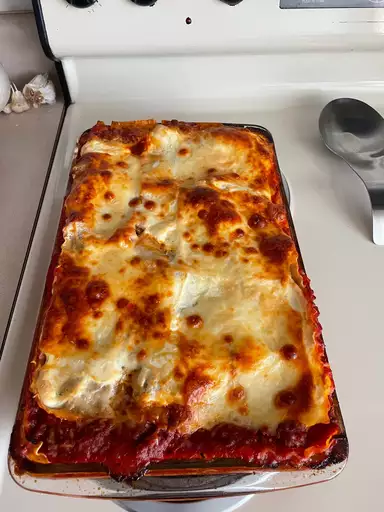

Lasagna

Description
When John Chandler submitted this lasagna recipe to Allrecipes more than 20 years ago, he had no idea how successful it would become.
One of our top-performing recipes of all time, World's Best Lasagna racks up more than 7 million views per year and has ranked among
the most popular lasagna recipes on the internet for two decades. Unfortunately, John unexpectedly passed away at 53 years old — read
all about his life and legacy here.
Make our most popular lasagna today to find out what all the fuss is about!
Ingredients
- Meat: sweet Italian sausage and lean ground beef
- Onion
- Garlic
- Tomato products: can of crushed tomatoes, two cans of tomato sauce, and two cans of tomato paste
- Sugar
- Spices and seasonings: fresh parsley, dried basil leaves, salt, Italian seasoning, fennel seeds, and black pepper
- Lasagna Noodles
- Cheeses: Parmesan, mozarella, and ricotta cheese
- Egg
Steps
- Make the meat sauce.
- Cook the noodles.
- Make the ricotta mixture.
- Layer the lasagna according to the recipe instructions.
- Cover with foil and bake.
- Let the lasagna rest before serving.
Return to Recipe List